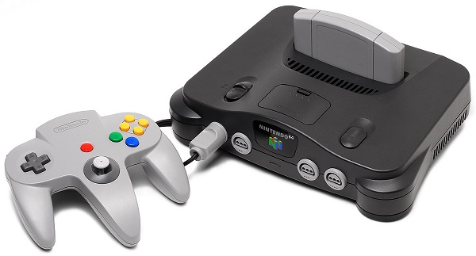

Nintendo 64
Det var tänkt att konsolen skulle släppas i Japan
i april 1996, men i stället flyttades Japanlanseringen till juni samma år,
för att i september det året släppas i Nordamerika.
På grund av leveransproblem och avsaknaden av
slagkraftiga
titlar sköts Europapremiären upp till 1 mars 1997,
och därmed missade Europalanseringen julruschen.
Handkontrollen till Nintendo 64 hade en ny banbrytande finess:
styrspaken var analog istället för de tidigare digitala.
Detta innebär att spelaren enbart genom att trycka olika hårt på styrspaken
kan få spelkaraktären att alltifrån
smyga på tå till att springa.
Den första versionen var mörkgrå till färgen,
sedan släpptes transparenta konsoler och kontroller i färgerna
orange, grön, röd, blå, lila och guld.
Reklam
Populära spel
-
Super Mario 64
-
Mario Kart 64
-
Goldeneye 007